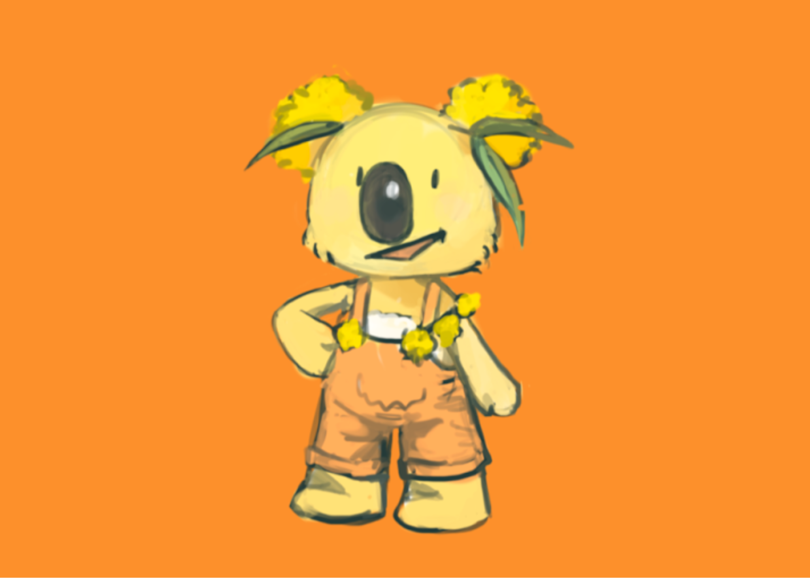
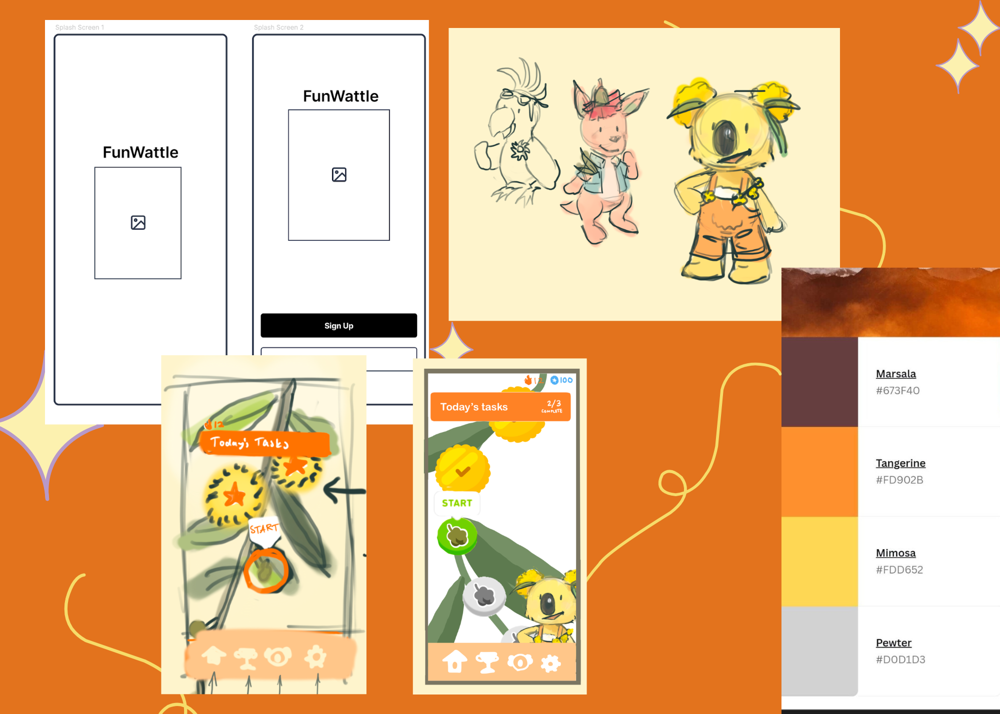
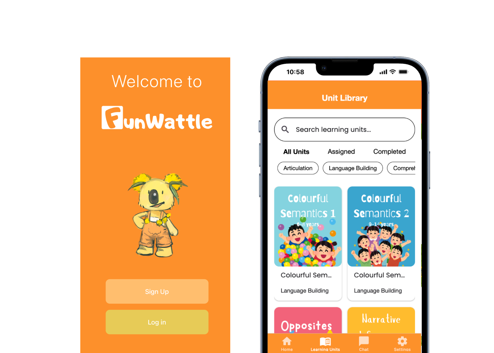
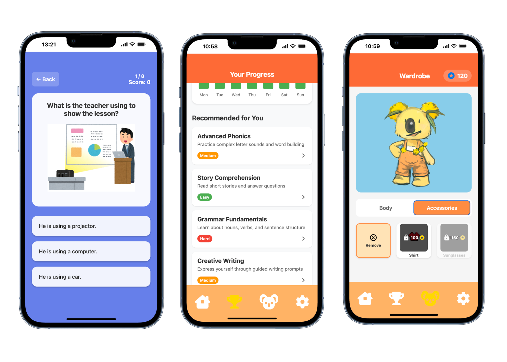
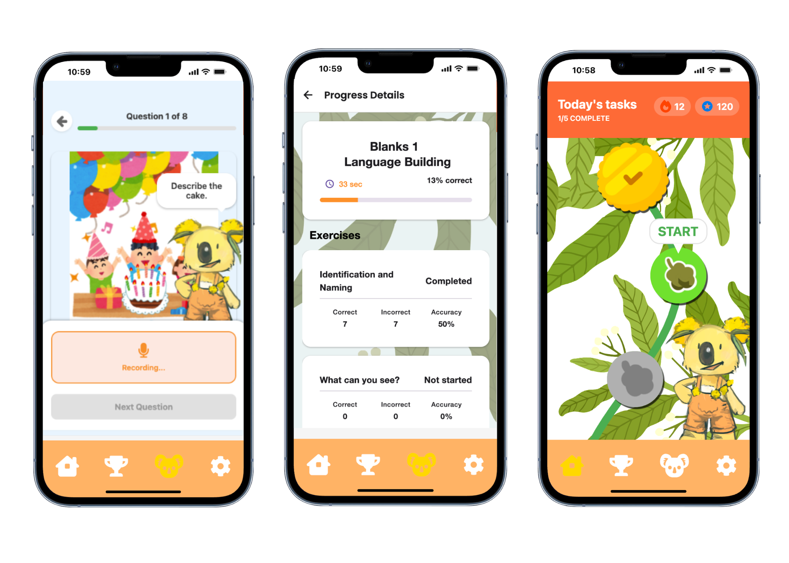

AI-POWERED SPEECH THERAPY
FUNWATTLEOVERVIEW
The project involved developing an AI-powered speech therapy app for children in collaboration with FunWattle, an early-stage startup, as part of COMP3900 (Computer Science Project). The goal was to improve accessibility to speech therapy through interactive, personalised support outside clinical settings.
As Product Owner in the Scrum team, I:
As a Software Engineer on the team, I:
We focused on child-safe, accessible and intuitive UX, personalised adaptive learning experiences, and engaging, child-friendly interfaces and gamification.
- Defined and prioritised the product backlog
- Translated client needs into technical requirements
- Led sprint planning and aligned design and development
As a Software Engineer on the team, I:
- Led the development of the AI speech therapist pipeline, including developing the RAG, prompt engineering, using vector comparisons to determine the correctness of the user's answer
- Designed and built multiple frontend components and screens, including user dashboards, module libraries, speech exercise components
We focused on child-safe, accessible and intuitive UX, personalised adaptive learning experiences, and engaging, child-friendly interfaces and gamification.
Developed a functional MVP featuring:
- A virtual therapist interface guiding structured exercises
- AI-driven personalised recommendations
- Adaptive difficulty based on user progress
- A child-friendly, intuitive UI/UX
The project delivered a functional prototype aligned with FunWattle's goals, demonstrating how AI could enhance accessibility in speech therapy while maintaining ethical safeguards. Demonstrated scalable and extensible architecture for future integration. Received strong client feedback on usability and ethical design.
Beyond technical output, this project strengthened my ability to:
Beyond technical output, this project strengthened my ability to:
- Lead within an Agile team
- Translate healthcare needs into technical systems
- Design AI solutions responsibly in sensitive domains
PHOTO GALLERY



